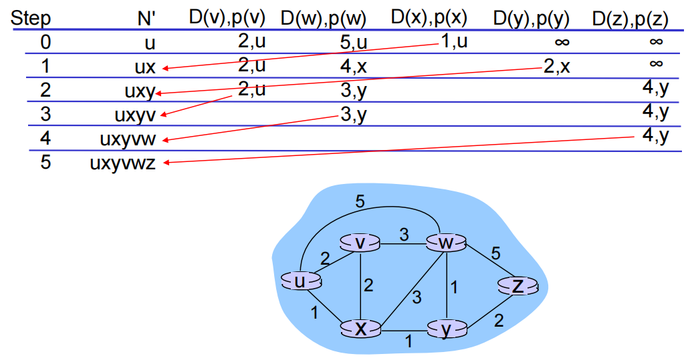
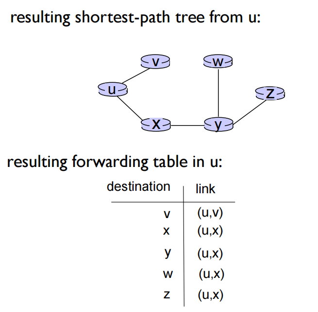
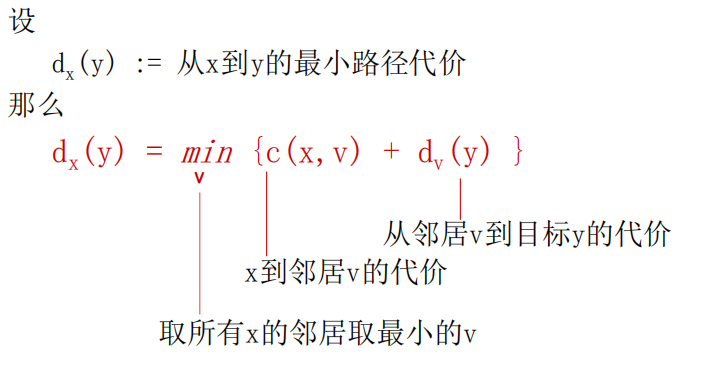
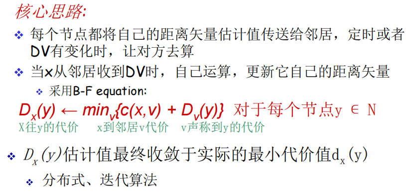
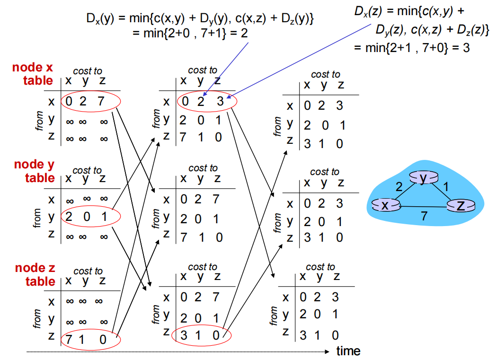
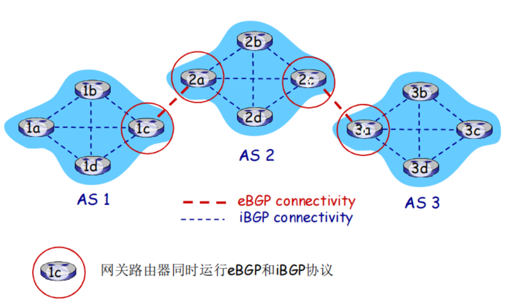

04.NetworkLayer TheControlPlane
5.1 Introduction¶
网络层有两个主要功能
- forwarding (data plane)：将packet从router的输入转发到router合适的输出端口，是局部的。
- route (control plane): 确定packet从源到目标的路径，是全局的。
以下两个方法用来构建网络层的控制平面
- Per-router Control Plane: 各管各的，不易全部更新。

- Logically Centralized Control(SDN)：远程的，集中化的，易于统一修改。

5.2 Routing Protocols¶
Routing Protocol Goal: 在network of routers中，在sending hosts 到 receiving host中，决定一条good path（good path的标准不同，可以是 least cost/ least congested / fastest）。
Gragh Components of Network:


那么，如何决定一条good path呢？用到route algorithm！
Routing Algorithm Classfication
global vs decentralized
- global（link state）:
- 所有的route都有完整的topology和link cost信息
- decentralized（decentralized vector）分布式，分散管理:‘
- router只知道physically connected neighbors(邻居)，只知道到邻居的link cost
- 在iterative的过程中和邻居交换信息
static vs dynamic
- static: routes随着时间变化缓慢变化
- dynamic: route变化很快（周期性，根据链路代价的变化而变化）
Link State¶
Link State(LS)
- 基于Dijkstra's algorithm
- 所有的node都知道net topology和link costs（link state 广播），每个node都有same info。
- 计算一个node到所有node的least cost path（给定node的forwarding table）
- iterative：k 次迭代后，我们得到了least cost path from k to destination

notion：
- c(x,y)：link cost/代价
- D(v): current value of cost from source to destination
- p(v): 前置节点
- N': 已经最优的集合
案例



Discussion

Distance Vector¶
DV
- 基于Bellman-Ford equation（动态规划）
- 不停地迭代最终会收敛到真实情况
- 每个节点维护自己的距离矢量
- 定时测量到所有邻居的代价
- 收到并维护一个它邻居的距离矢量集


Distance Vector Algorithm
- Dx (y) = 节点x到y代价最小值的估计，x 节点维护距离矢量Dx = [Dx (y): y є N ]
- node x:
- 值得所有邻居v的代价：c(x,v)
- 收到并且维护每一个邻居的distance vector
- 对于每个邻居，x维护Dx = [Dx (y): y є N ]
- 

DV: Link cost changes
- node 检测出本地的link cost 变化
- 更新路由信息，重新计算 distances vector
- 如果DV改变了，通知邻居
LS vs DV¶
消息复杂度：DV更加
LS： n node, e path, 发送的报文O(nE)个
DV：只和邻居交换信息（全部路由信息，局部传播）
收敛时间（LS better）
LS：O(n²)，可能震荡
DV：收敛较慢，可能存在路由环路，count-to-infinity问题
健壮性（LS better）
LS：node告知不正确的链路代价，每个node只计算自己的路由表，错误信息影响小，局部
DV：可能会告知所有node不正确的link cost，错误会扩散全网
5.3 Instra-AS routing the Internet: OSPF¶
面对成千上万的route，如何管理？
从两个层面管理：
- 自治区间 inter-AS routing
- AS间允许AS间路由协议，外部网关协议
- 解决AS之间的路由问题，完成AS间的互联互通
- 自治区内 intra-AS routing
- 同一个AS内的路由器运行着相同的路由协议
- 不同的AS间可能运行不同的内部网关协议
- 解决规模和管理问题
- eg. RIP, OSPF, IGBP
OSPF¶
（自治间内的路由选择协议）
- open标准公开可获得
- 使用LS算法：
- LS分组在网络中分发
- 全局网络topology和link cost都在每一个node中保持
- 采用dijkstra算法
- OSPF通告信息中携带：每一个邻居route一个table
- 通告信息会传遍AS全部（通过泛洪）：在IP数据报上直接发送OSPF报文（而不是UDP和TCP）
高级特性（RIP中没有的）
- 安全
- 允许多个代价相同的路径存在（RIP只允许一个）
- 对于每一个link path，对于不同的TOS有多重代价矩阵
- 集成支持单播和多播
- 在大型网络中支持hierarchical OSPF

hierarchical OSPF
- 两个级别的层次：
- local area
- backbone
- area border routers: 汇集到自己区域内的网络距离，向其他区域边界路由器通告
- backbone routers: 仅仅在backbone内，运行OSPF路由
- boundary routers: 连接其他AS’es
5.4 Routing Among the ISPs: BGP¶
自治区间的路由选择协议：BGP
-
BGP把network中的AS粘在一起
-
BGP给每个自治区提供以下方法
- eBGP: 从相邻的自治区哪里获得子网可达信息
- iBGP：将获得的子网可达信息传遍整个自治区内部所有的路由器
- 运行子网向互联网其他网络告知“我在这里”

BGP Basics
BGP session: 两个BGP路由器（peers）在一个半永久的TCP连接数交换BGP报文
通告向不同子网前缀的路径（BGP是一个路径矢量协议）
5.5 The SDN control plane¶
5.6 ICMP¶
作用：
主机或者路由器使用ICMP来发送差错报文和询问报文
由主机、路由器、网关用于传达网络层控制信息。
错误报告：主机不可到达、网络、端口、协议
Echo请求和回复